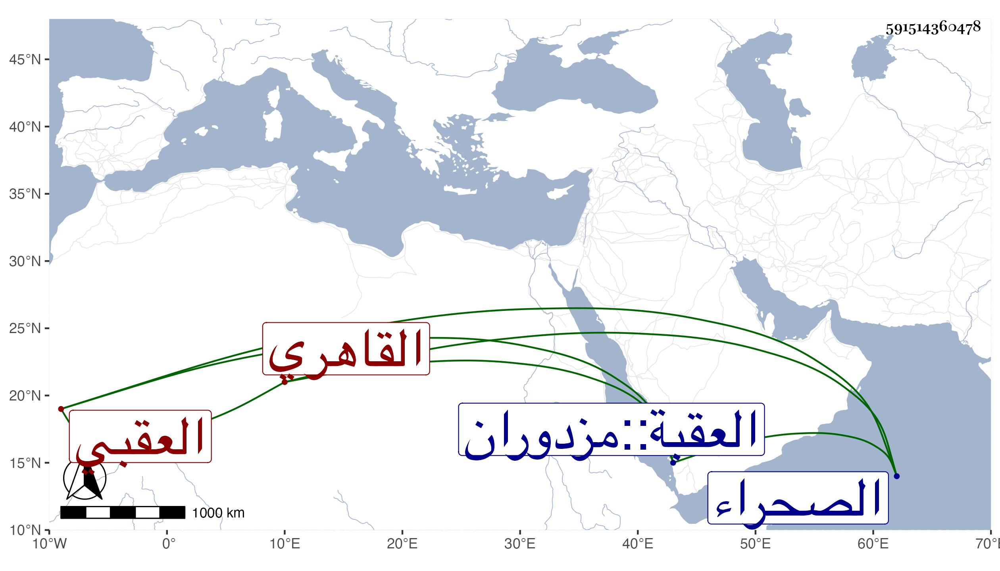

0902Sakhawi.DawLamic.ITO20230111-ara1.EIS1600.591514360478
Biography ID: 591514360478
199
محمد بن أحمد بن محمد بن يوسف بن سلامة بن سعيد الشمس بن الشهاب العقبي الأصل القاهري الماضي أبوه . ولد تقريبا سنة ثمانين وسبعمائة بصليبة جامع ابن طولون ، ونشأ فحفظ القرآن ثم تحول إلى الصحراء وسمع علي ابن أبي المجد والعراقي والهيثمي والحلاوي والشرف بن الكويك والجمال الحنبلي والكمال بن خير في آخرين ، وأجاز له في سنة اثنتين وثمانمائة فما بعدها الشهاب أحمد بن علي الحسيني وابن قوام وأبو حفص البالسي وفاطمة ابنة ابن المنجا وخديجة ابنة ابن سلطان وعائشة ابنة ابن عبد الهادي والزين المراغي وخلق وتنزل في صوفية الشيخونية وغيرها ، أخذت عنه . وكان خيرا مديما للتلاوة وربما قرأ مع الجوق وأقرأ المماليك بالطباق ، وحج وجاور غير مرة . ومات في رجوعه من الحج بالعقبة في المحرم سنة اثنتين وستين ودفن هناك رحمه الله .
